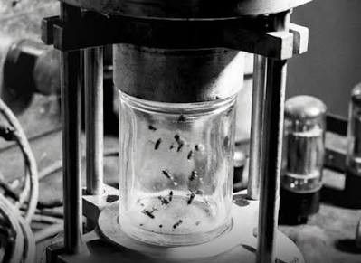
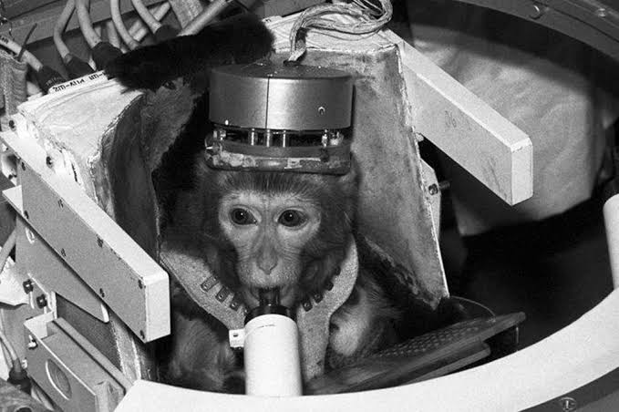
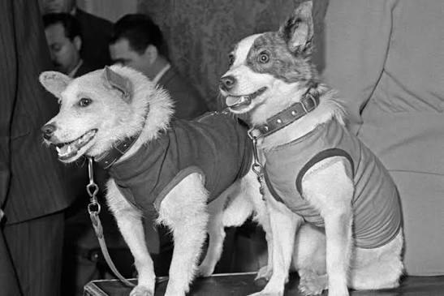
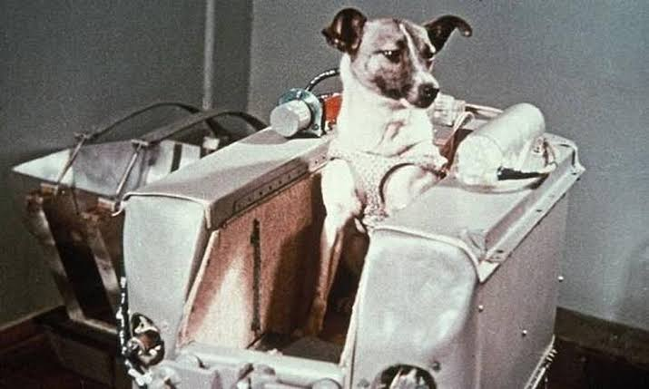
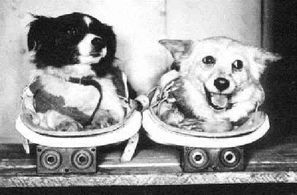
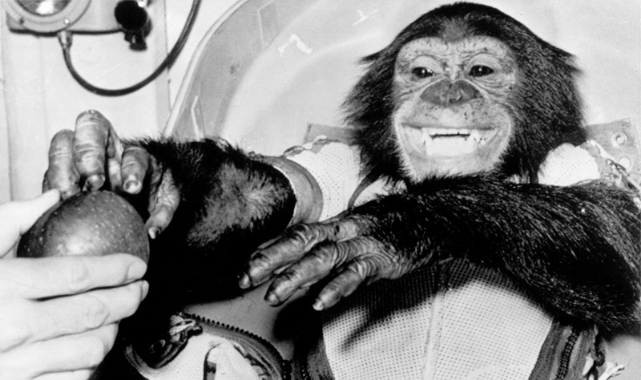
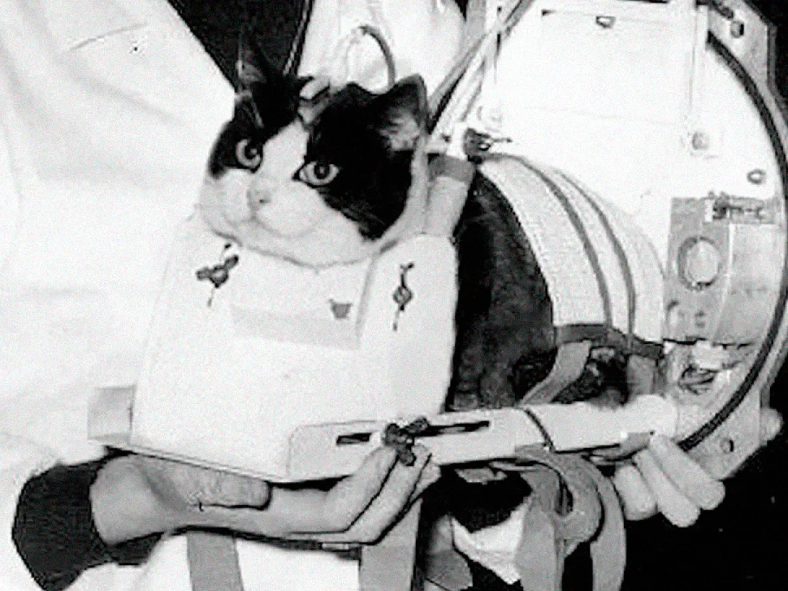

Sobre nós
Este site nasce como uma simples homenagem para resgatar a memória e honrar a coragem de cada animal enviado ao espaço. Muito antes de os humanos darem seus primeiros passos no cosmo, esses pioneiros silenciosos desbravaram o desconhecido e deram suas vidas pela pelos interesses humanos. Este projeto existe para garantir que a história e o sacrifício de nenhum deles caiam no esquecimento....
Histórias
- Moscas-das-frutas (1947)
Os Primeiros Seres Vivos no Espaço. Enviadas pelos EUA a bordo de um foguete V-2 capturado da Alemanha, foram lançadas para estudar o impacto da radiação cósmica em altitudes extremas. Retornaram vivas de paraquedas.

- Albert II (1949)
O Primeiro Mamífero. Um macaco-rhesus enviado pelos americanos em um voo suborbital. Chegou a 134 km de altitude, mas infelizmente faleceu na reentrada devido a uma falha no paraquedas da cápsula.

- Tsygan e Dezik (1951)
Os Primeiros Cães no Espaço. Dois cães sem raça definida recolhidos das ruas de Moscou pela União Soviética. Realizaram um voo suborbital de sucesso e retornaram vivos e sem ferimentos.

- Laika (1957)
A Primeira em Órbita. A cadela vira-lata soviética tornou-se o primeiro ser vivo a orbitar a Terra, a bordo do Sputnik 2. Sendo uma missão sem tecnologia de retorno, Laika morreu poucas horas após o lançamento devido ao superaquecimento da cápsula

- Belka e Strelka (1959)
As Primeiras a Retornar Vivas da Órbita. Acompanhadas por 40 camundongos, dois ratos e plantas, passaram um dia inteiro orbitando a Terra no Sputnik 5 e retornaram em segurança. Strelka mais tarde teve filhotes, e um deles foi presenteado ao presidente dos EUA, John F. Kennedy.

- Ham, o Chimpanzé (1961)
O Pioneiro Treinado. Lançado pela NASA no programa Mercury, Ham não foi apenas um passageiro: ele havia sido treinado para puxar alavancas em resposta a luzes piscantes. Seu voo bem-sucedido provou que tarefas complexas podiam ser executadas na microgravidade e abriu caminho para o voo de Alan Shepard.

- Félicette (1963)
A Única Gata no Espaço. Lançada pelo programa espacial francês, a gata de rua parisiense passou por um voo suborbital de 13 minutos e retornou viva, contribuindo para os dados sobre neurofisiologia em gravidade zero.
